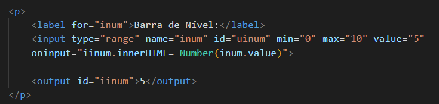

Formulários com JavaScript
- Para somarmos dois valores digitados por um usuário e que esse resultado apareça na tela, precisamos usar JavaScrip, o código usado nesse exemplo é o oninput="isoma.innerHTML = Number(in1.value) + Number(in2.value)" . Onde criamos uma tag usando output para dar o nome e depois outra dentro do input que passamos o código, que mostra que estamos somando dois valores do nome isoma informado no output.
- Para usar outra modalidade do JavaScript, como o range e utilizamos barra de nível e a númeração aparecer, usamos o output para informar o id ou name, e utilizamos o código oninput="iinum.innerHTML= Number(inum.value).
- Para usarmos uma função de mostrar uma idade de uma pessoa de acordo com seu ano de nascimento, utilizamos uma função e damos uma nome para ela, a função do exemplo 3, mostra como é feito o cálculo:
script
function calcIdade() {
let atual = new Date().getFullYear()
iidade.innerHTML = Number(atual) - Number(iano.value)
}
script
Exemplo Output com JavaScrit
Exemplo Output barra de nível com JavaScrit

Exemplo Cálculo de idade a partir do ano de Nascimento com JavaScrit